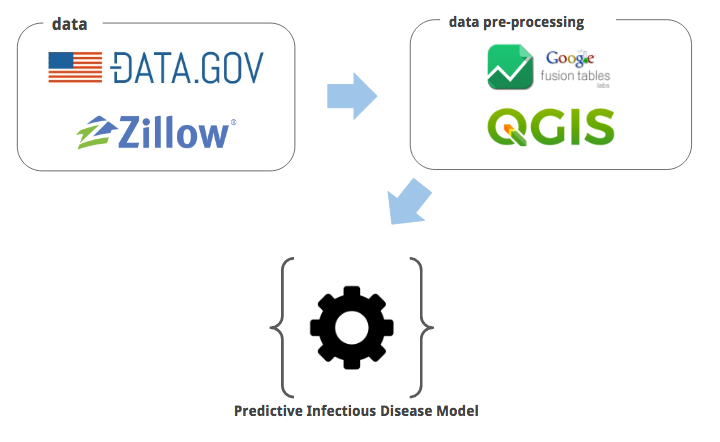
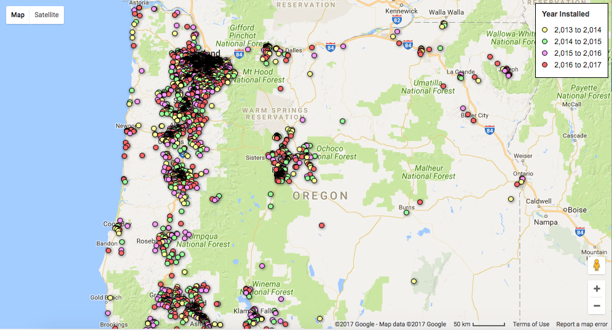
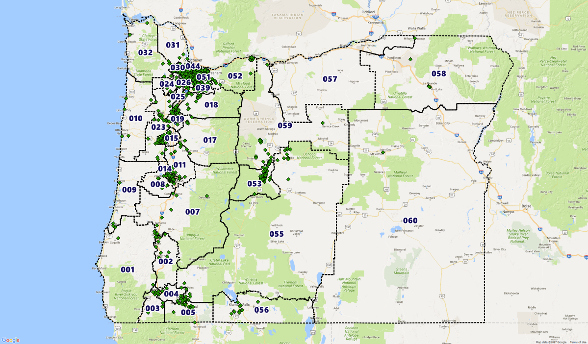

In the US Solar Industry, customer acquisition cost are very high (49 cents per Watt, equivalent to $3,000 for the typical 6-kilowatt residential rooftop).
This project is born out of the 2017 SunCode challenge where our team will try to address the cost of acquisition issue in the US solar industry by creating a predictive model for residential solar adoption.
Infectious Disease Model
The basic premise of using an infectious disease model to predict solar energy adoption is that Americans (middle class Americans in particular) are driven by what their neighbors are doing. Essentially, it is the "keeping up with the jones" that motivates people to adopt solar.
Give that premise, we can model the likelihood of an individual adopting solar by examining who else in the neighborhood has previously adopted solar. We'll be considering other variables such as household income and neighborhood political affiliations.
Data Requirement

Solar Installations
To model the progression of an infectious "solar" disease, we must understand the spatial relationship between an infected individual to the likelihood of another individual becoming infected.
After some significant effort, we have located public domain information on the Oregon's solar uptake from the year 2013 to 2016. This data is then visualized with Google Fusion Table in a web-based interface.

Income
One of the factor that we will be considering is the income level of individual household. Since income data are difficult to obtain at this granularity, we'll be using the house value as proxy (pulled from the Zillow API).
Political Affiliation
Our hypothesis postulates that residential solar power adoption rates is affected by the individual's political affiliation. We use a simple binary variable to represents whether the district the location is in registered majority democrat or republican between 2013-2016.
Data extract for this portion is difficult, since the data is only available in PDF format with poorly constructed tables.

The Oregon lower house district boundary data can then be used to classify a particular geographical area's political leaning.

What's Next
In the next blog post I'll describe the predictive disease modeling process.